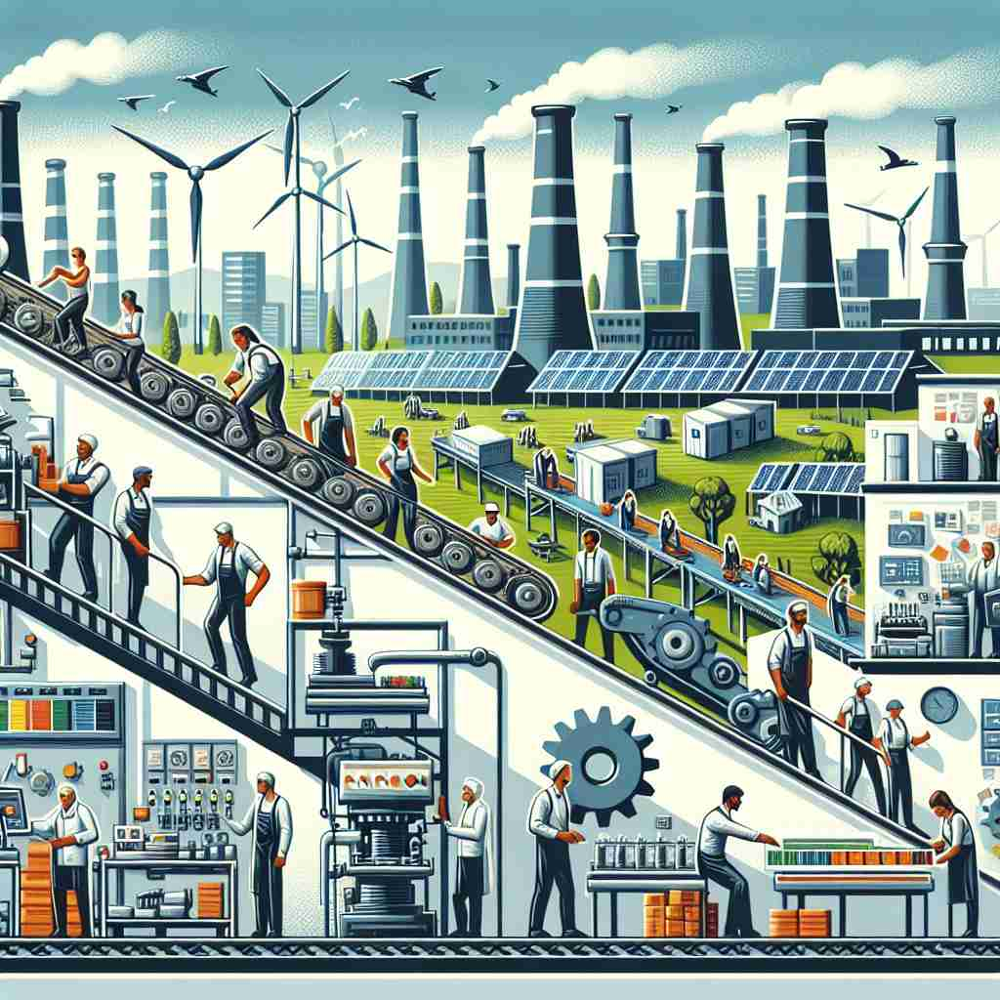

💬 The automobile industry is essential for the economy, providing jobs and products for consumers. 汽车工业对经济至关重要，为消费者提供就业机会和产品。

💬 The people are working in the technology industry, surrounded by digital innovations. 人们在技术行业工作，身处数字创新之中。
💬 The tourism industry is very important for this beach resort. 旅游业对这个海滨度假村非常重要。

💬 The workers are part of the manufacturing industry that produces essential goods. 这些工人是生产重要商品的制造业的一部分。
🧠 想象'industry'是一个大工厂，里面充满了忙碌的工人和机器。这个画面包含了组织性、生产活动、特定领域、勤奋工作等核心元素。无论是具体的行业，还是抽象的勤奋品质，都可以联想到这个繁忙的'工厂'场景，帮助你记住和理解'industry'的多重含义。
🔈 ['ɪndəstrɪ]
🗝️ n. organized economic activity producing goods or services 组织化的经济活动,生产商品或提供服务
🎭 想象一个大型工厂的场景，工人们正在忙碌地操作机器，生产各种商品。这种有序的生产活动完美展示了'industry'作为有组织的经济活动的含义。
💬 The automobile industry is a major employer in this region. 汽车工业是该地区的一大雇主。
🌳 由词根 "industri-"（勤奋，工业）加上名词后缀 "-y" 构成，指的是一个国家的经济活动领域，如制造业、技术等。
🕸️ 1. industrious: 勤奋的 2. industrial: 工业的 3. industrialize: 工业化
💡 记忆 "industry" 时，可以联想到 "industrious" 的人往往活跃在 "industry" 中。通过将勤奋的特质与工业活动联系起来，更容易理解它的意思。